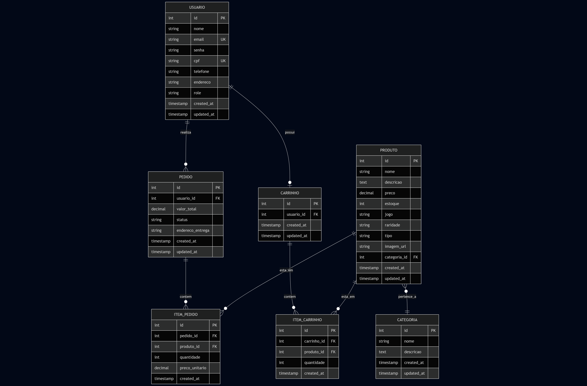

Sobre o Projeto
O CardShop é uma plataforma de e-commerce voltada para o comércio de cartas colecionáveis de Trading Card Games, com foco em Magic: The Gathering e Yu-Gi-Oh!. O objetivo é criar um espaço onde jogadores e colecionadores possam comprar cartas de forma prática e segura.
A aplicação conta com funcionalidades completas tanto para clientes quanto para administradores. Usuários podem navegar pelo catálogo, adicionar produtos ao carrinho e finalizar compras, enquanto administradores têm acesso à gestão de estoque, usuários e pedidos.
Tecnologias Utilizadas
Backend
- Node.js - Ambiente de execução JavaScript
- Express.js - Framework web para criação da API
- TypeScript - Superset JavaScript com tipagem estática
- Arquitetura MVC - Separação em camadas (rotas, controladores e serviços)
Banco de Dados
- PostgreSQL - Banco de dados relacional robusto e escalável
- Garantia de integridade de dados e suporte a transações complexas
Frontend
- React - Biblioteca para criação de interfaces interativas
- CSS - Estilização moderna e profissional
Segurança
- JWT (JSON Web Tokens) - Autenticação segura
- Sistema de autorização diferenciando usuários comuns e administradores
- Validação de entradas e tratamento adequado de erros
Principais Funcionalidades
Para Clientes
- Navegação pelo catálogo de cartas
- Filtros por jogo (Magic, Yu-Gi-Oh!) e categorias
- Adição de produtos ao carrinho de compras
- Gerenciamento do carrinho (adicionar, remover, alterar quantidades)
- Finalização de pedidos
- Visualização do histórico de compras
Para Administradores
- Gestão completa de produtos (adicionar, editar, remover cartas)
- Controle de estoque
- Gerenciamento de categorias
- Visualização e gerenciamento de todos os pedidos
- Atualização de status de pedidos
Entidades do Sistema
O sistema trabalha com cinco entidades principais:
- Usuários - Gerenciamento de contas e perfis de clientes e administradores
- Produtos (Cartas) - Catálogo completo de cartas colecionáveis disponíveis para compra
- Pedidos - Histórico e gerenciamento de todas as compras realizadas
- Carrinho - Armazenamento temporário de itens antes da finalização da compra
- Categorias - Organização das cartas por jogo (Magic, Yu-Gi-Oh!) e tipos
Rotas da API REST
Autenticação
POST /api/auth/register- Registrar novo usuárioPOST /api/auth/login- Login e geração de token JWTPOST /api/auth/logout- Logout do usuário
Produtos (Cartas)
GET /api/products- Listar todos os produtosGET /api/products/:id- Buscar produto específicoPOST /api/products- Criar novo produto (admin)PUT /api/products/:id- Atualizar produto (admin)DELETE /api/products/:id- Deletar produto (admin)
Carrinho de Compras
GET /api/cart- Visualizar carrinho do usuárioPOST /api/cart/items- Adicionar item ao carrinhoPUT /api/cart/items/:id- Atualizar quantidadeDELETE /api/cart/items/:id- Remover itemDELETE /api/cart- Limpar carrinho
Pedidos
GET /api/orders- Listar pedidos do usuárioGET /api/orders/:id- Buscar pedido específicoPOST /api/orders- Criar novo pedidoPUT /api/orders/:id- Atualizar status (admin)DELETE /api/orders/:id- Cancelar pedido
Características técnicas do projeto - seguindo recomendações do slide
- Arquitetura MVC bem estruturada e organizada
- API RESTful completa com operações CRUD
- Segurança com autenticação JWT
- Sistema de autorização por níveis de acesso
- Banco de dados relacional com PostgreSQL
- Interface moderna e responsiva com React
- Validação de dados e tratamento de erros (provavelmente em Jest)
- Código escrito em TypeScript
Perguntas
1. Quais são as principais funcionalidades que seu o sistema deve oferecer para atender às necessidades dos usuários?
Vou dividir as principais funcionalidades em duas partes, para clientes, as principais funcionalidades envolvem navegar pelo catálogo de cartas, podendo filtrar pelo produto da carta (por exemplo, Magic the Gathering) ou categorias como raridade da carta. Adicionar e remover produtos do carrinho, bem como editar alterar a quantidade de produtos previamente adicionados. Finalizar o pedido e verificar o histórico de compras. Para administradores, as principais funcionalidades são: gerir os produtos do catálogo, isso envolve adicionar ou remover e alterar atributos de produtos registados; Gerenciar as categorias (criar, remover e editar). Controle de estoque das cartas (Nota para o professor: estamos na dúvida se isso vai aumentar muito o escopo e vamos tirar essa dúvida com o senhor na segunda); Visualizar todos os pedidos feitos pelos clientes, bem como alterar o status deles.
2. Quais características de qualidade (como desempenho, segurança, usabilidade ou escalabilidade) são importantes para o seu sistema desenvolvido?
Segurança é uma característica vital para o projeto, para garantir a integridade do banco de dados, dados do usuário e a integridade da loja. Um bom desempenho é necessário para o sucesso da loja: a lentidão é uma das maiores causas para usuários saírem do site e redução da taxa de conversão; A usabilidade é fundamental para facilitar a navegação e o gerenciamento do carrinho, nessa seção a responsividade é muito importante para melhorar a usabilidade do sistema; A escalabilidade deve ser levada em conta também, é a partir dela que podemos suportar um crescimento de número de usuários e pedidos simultâneos; Finalmente, a manuntenibilidade também é desejável, pois o mesmo facilita refatorações, manutenções e a evolução do código a longo prazo.
Diagrama do Banco de Dados
Estrutura prevista do banco de dados com todas as entidades e seus relacionamentos:
